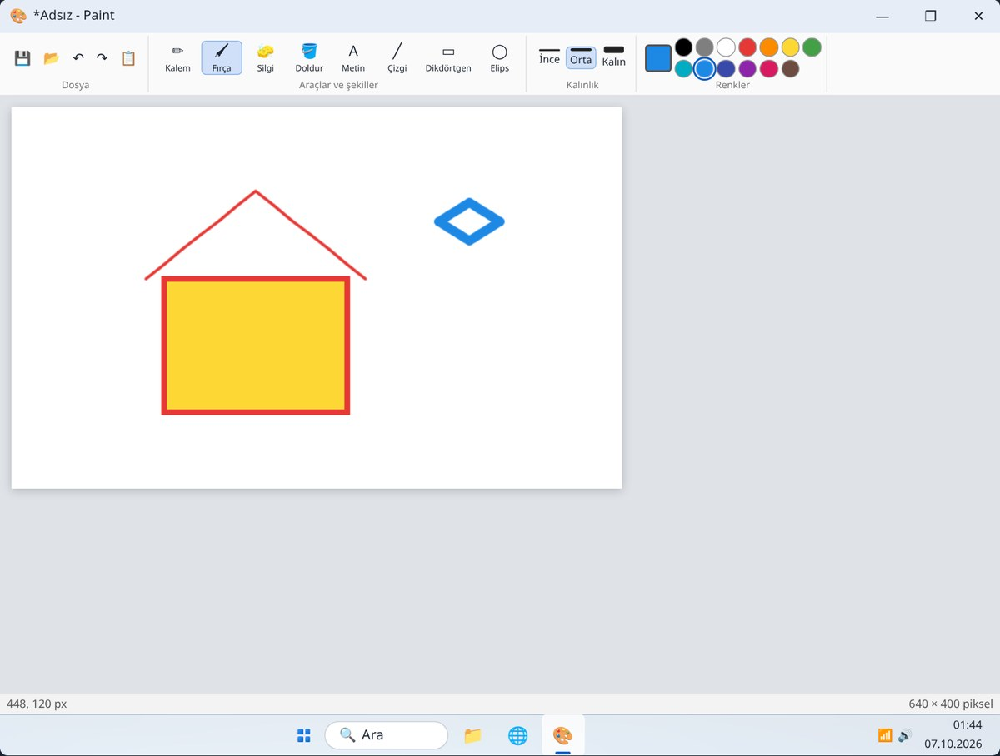
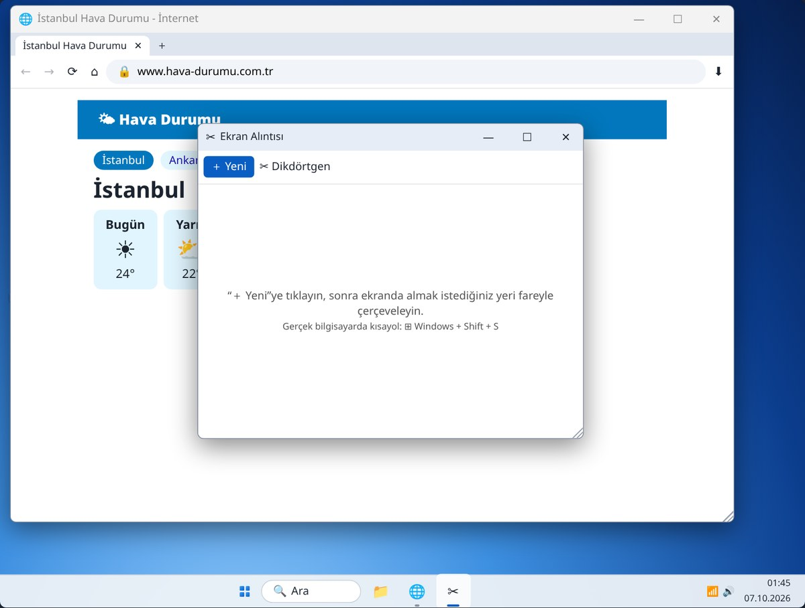
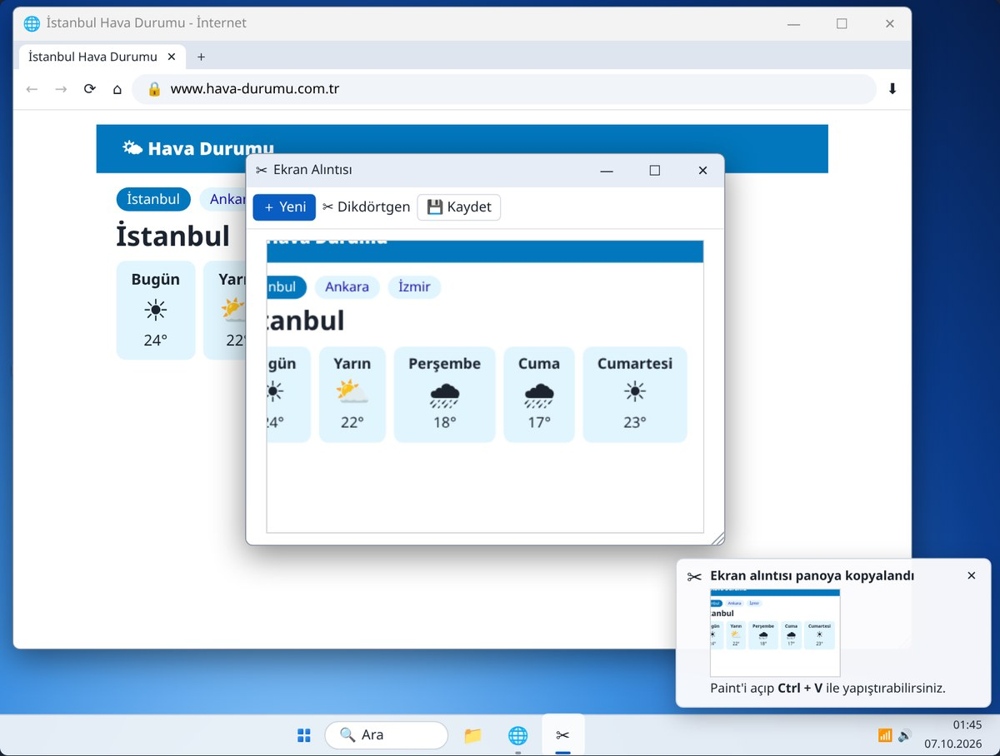
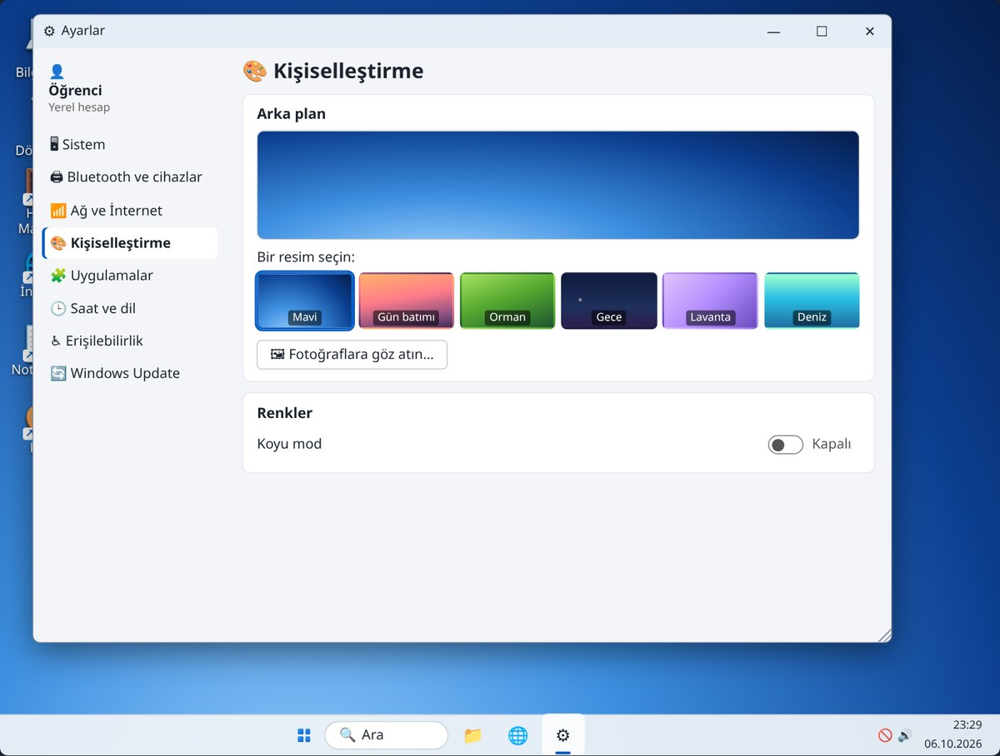
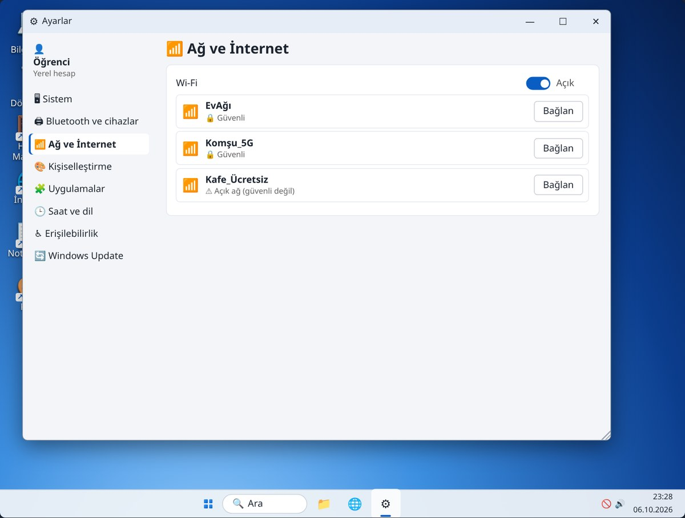
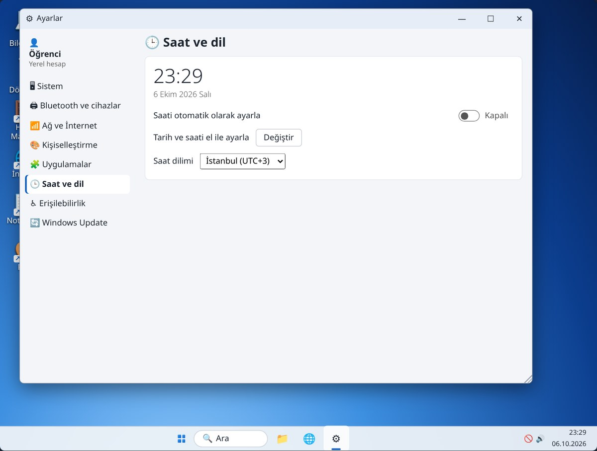
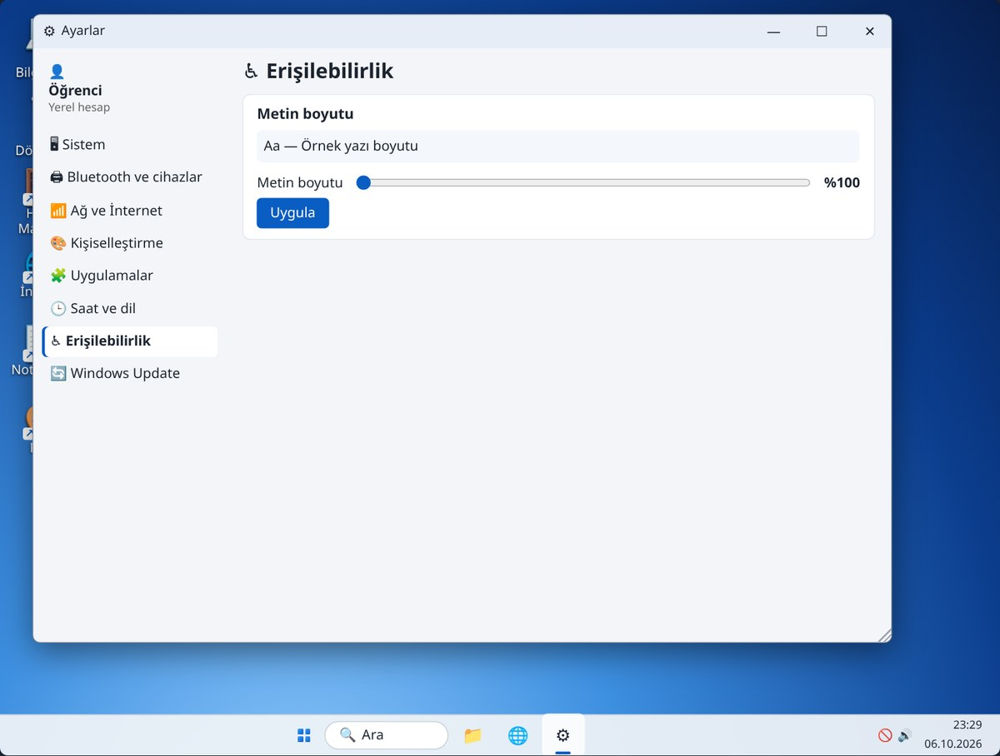

7. Hafta: Paint, Ekran Alıntısı ve Ayarlar
Alıştırmalar
Ders 1 · Paint (25 dk)

Ders 1 · Paint
| ▭ Dikdörtgen | Bir köşeden başlayıp çapraz sürükleyin. Elips ve çizgi de aynı şekilde çizilir. |
|---|---|
| 🪣 Doldur | Rengi seçin, kenarları kapalı bir alanın içine tıklayın. |
| A Metin · Silgi | Metin: resme yazı ekler. Silgi: bir yeri siler. |
| Ctrl + Z | Son yaptığınızı geri alır. |
| Ctrl + S | Resimler klasörüne ilk resmim adıyla kaydedin. Sonra resme sağ tıklayıp Masaüstü arka planı olarak ayarla. |
Ders 2 · Ekran Alıntısı (15 dk)


Ders 2 · Ekran Alıntısı
| Paint’e yapıştır | Paint’i açıp Ctrl + V. Üzerine çizebilir, yazı ekleyebilirsiniz. |
|---|---|
| Kaydet | Ctrl + S ile Resimler klasörüne hava durumu adıyla. |
| Gerçek bilgisayarda | ⊞ + Shift + S, ekran kararınca yeri çerçeveleyin. Sonra WhatsApp’ta, e-postada ya da Paint’te Ctrl + V. |
| Print Screen (PrtSc) | Bütün ekranı panoya alır. |
Bir hata mesajını, tarifi ya da adresi resim olarak saklayıp birine gönderebilirsiniz.
Ders 3 · Ayarlar (25 dk)
| Kişiselleştirme | Arka plan: Orman’ı seçin; kendi fotoğrafınızı da seçebilirsiniz |
|---|---|
| Sistem | Ses düzeyini 30’a çekin; “Sesi kapat (sessiz)”i açıp kapatın |
| Gerçekte | Ayarlar’ı ⊞ + I ile açın |

Ders 3 · Ayarlar
Kafe_Ücretsiz gibi şifresiz ağlarda bankacılık işlemi yapmayın, şifre girmeyin: aynı ağdaki başkaları görebilir.

Ders 3 · Ayarlar


Özet
| Paint | Kalem, renk, şekil, doldur, yazı, silgi, Ctrl+Z, Ctrl+S |
|---|---|
| Ekran Alıntısı | ⊞ + Shift + S; Ctrl + V ile yapıştır |
| Ayarlar → Kişiselleştirme | Arka plan |
| Ayarlar → Sistem | Ses düzeyi |
| Ayarlar → Ağ ve İnternet | Wi-Fi açma, ağa bağlanma |
| Ayarlar → Saat ve dil | Saati otomatik ayarla |
| Ayarlar → Erişilebilirlik | Metin boyutu |